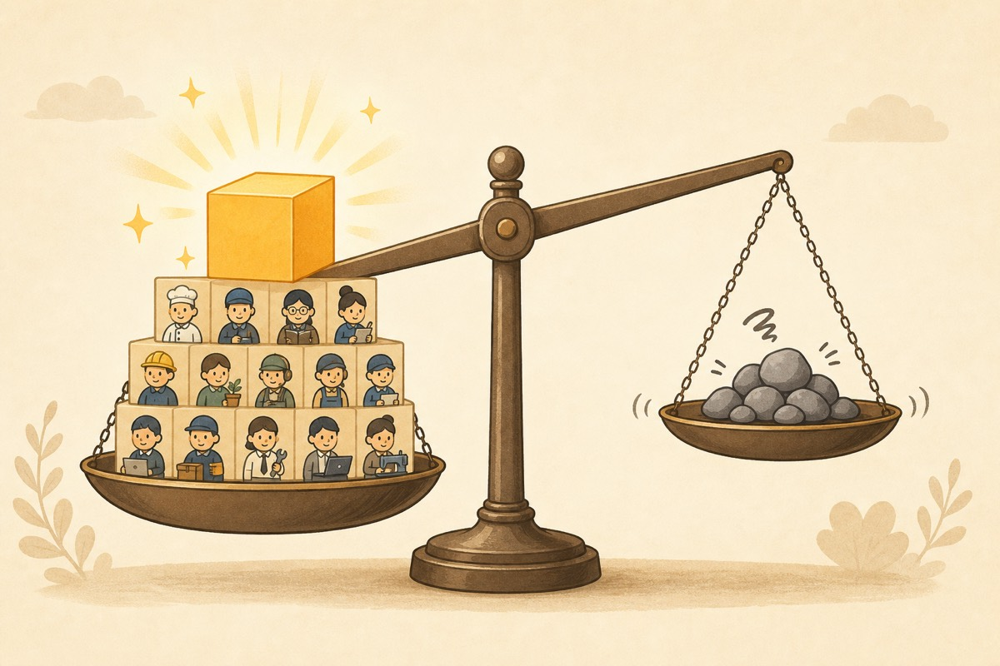
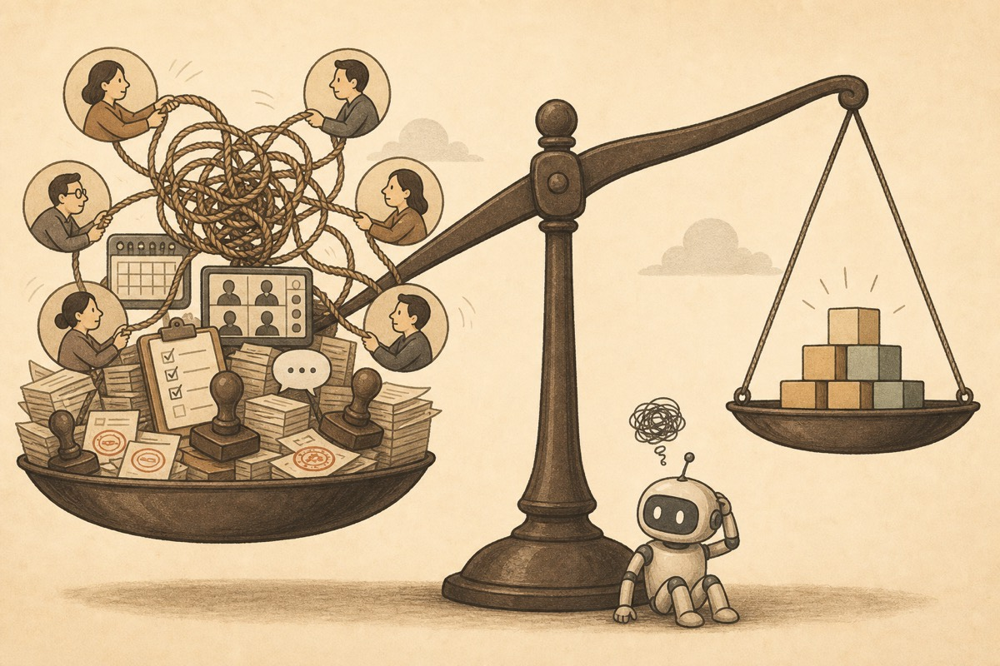

In the Agent era, an economic intuition inherited from The Wealth of Nations is meeting a cloud.
Chenxin Li · June 2026 · An essay in six parts
Written around Adam Smith's birthday. In 1776, The Wealth of Nations turned “division of labor brings efficiency” into one of the most durable intuitions in modern economics. More than two centuries later, the Agent era is forcing us to recalculate that account.
In the Agent era, a core economic intuition about specialization is meeting a cloud.
Where the Cloud Comes From
Under the old productivity regime, the gains from division of labor were larger than its friction costs.

For more than two centuries, one of the deepest beliefs in modern economics has been that division of labor creates efficiency, exchange reconnects divided work, markets extend specialization, firms organize it when needed, and wealth grows through this entire structure.
The idea never really left the stage. Later theories branched in many directions, but the line that runs through The Wealth of Nations remained alive: modern society becomes productive by organizing many limited people into large, stable systems of production.
In that sense, division of labor is more than one concept inside economics. It is part of the foundation of the modern view of production. Human beings did not become productive because each person became omnipotent. They became productive because complex work could be split into smaller parts and assigned to people who could specialize.
Specialization raised skill, lowered learning thresholds, stabilized process, and made exchange and organization necessary. If we want to understand why modern economics worked, we have to understand the productivity conditions behind it.
Under the old productivity regime, the ability boundary of a single person was narrow. Execution was expensive. Learning was slow. Tools were often specialized and costly. In that world, dividing work was close to the only rational answer.
Around division of labor, modern society built an entire set of production relations. Roles became narrower. Skills became professionalized. Firms used hierarchy to coordinate internal work. Markets used exchange to reconnect production links that had been separated.
This is why so many central intuitions in modern economics stand on the historical success of division of labor. Prices matter because a divided world needs exchange. Firms matter because markets do not always coordinate divided tasks cheaply. Institutions matter because deeper specialization requires stable expectations, incentives, and constraints.
But a new cloud is appearing.
In the Agent era, the friction costs of over-specialization can begin to outweigh the gains.

The cloud does not mean old economics suddenly failed. It does not mean markets, firms, or organizations lose their meaning overnight. The deeper change is simpler: productivity is changing.
As models, toolchains, and agent systems improve, the capability boundary of a single action unit expands. Tasks that once required multiple narrow roles, repeated handoffs, and strict specialization can increasingly be done by fewer people working with stronger tools.
Execution costs fall. Capability radius expands. The division-of-labor logic built on high execution costs begins to face pressure at scale.
The question then moves from “does division of labor improve efficiency?” to “is the net gain from division of labor still large enough?” Division of labor always carries costs. Once a task is split, it creates handoff, communication, alignment, supervision, verification, and responsibility-splitting costs.
In the past, these costs rarely became the main character because the gains were so large. Today, as execution becomes cheaper, more general, and easier to call, the hidden friction begins to surface.
The cloud over modern economics is therefore not floating above its most visible conclusions. It sits closer to its default assumptions. We used to assume that finer task division means higher efficiency, clearer roles mean stabler cooperation, and deeper specialization means more social productivity.
Those assumptions all contained a historical condition: the single action unit was weak, and execution itself was expensive. That condition is now changing.
If productive forces shape production relations, then new productive forces will eventually force new relations to appear. The old productive forces produced a division-of-labor society. The new productivity conditions are making parts of that society less optimal.
This does not mean division of labor disappears. The narrower point is that over-specialization is no longer automatically efficient. In more and more places, it can become a source of friction.
The core question of this essay is therefore not whether economics is over. The better question is: when productivity conditions change, how much of the old division-of-labor production relation, organizational form, and economic intuition still holds?